Maandag 11 november 2024
Wandeling Temse
Wegens de Sigmamaatregelen langs de Schelde heb ik tijdens de wandeling het plan volledig
moeten aanpassen en werd het een freehiking op het gevoel.
Vertrokken aan de sporthal Temsica in de Gasthuisstraat ging het door de woonwijken naar de
markt in Temse en vandaar over de Temsebrug. Aan de voet van de brug vindt je het standbeeld
van de heilige Amelberga die volgens de legende op miraculeuze wijze op de rug van een steur
Temse binnenvaart.
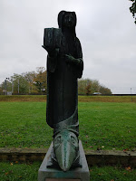
Over de Temse brug gaat het links via het jaagpad naar Buitenland om dan via een lus langs
de Oude Schelde terug te keren naar de Temsebrug.
We steken de Temsebrug opnieuw over langs de rechtse kant en aan de voet gaat het door het Scheldepark richting Steendorp. Hier vindt het het Fort van Steendorp waar je volledig rond kan wandelen.
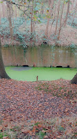
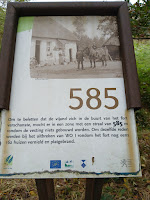
Het was de bedoeling om door de Roomkouter te gaan, doch hier zijn honden niet zijn toegelaten dus werd het er rond tot op de Kapelstraat.
Via Schauselhoek, Hollebeek en Oostberg terug naar het Scheldepark om even een vieruurtje te nemen in de brasserie fretalop van het zwembad. Honden toegelaten.
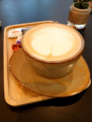
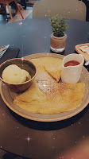
Van hier terug naar de sporthal. Goed voor ongeveer 23 km.
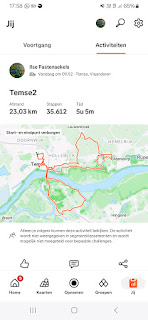
Zondag 17 november 2024
Poeldijk - Hoek van Holland
Voor een capoeira-weekendje naar Nederland. De ring rond Rotterdam blijkt al even er te zijn als de ring rond Brussel en Antwerpen.
We logeerden 2 nachten in hotel Saint Vincent te Poeldijk. Het hotel was oorspronkelijk een verenigingshuis. Na een korte leegstand werd het een hotel. Veel van de oorspronkelijke charme is bewaard gebleven.
Het toeristisch seizoen zit erop, daarom toch een beetje een zoektocht naar een eetgelegenheid, uiteindelijk zijn we terechtgekomen in eetcafé Zout.
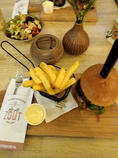
Zaterdag hebben we een korte wandeling van ongeveer 15 km gedaan. De streek is gekend voor de bloementeelt, overal zie je serres.
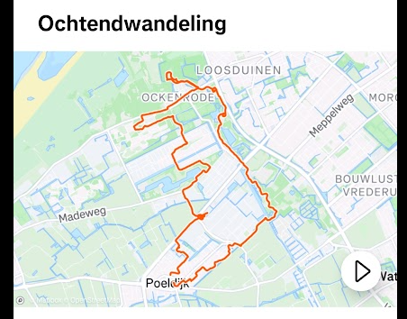
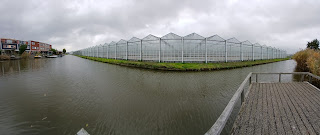
We zijn toevallig terechtgekomen in een pluktuin waar we ook koffie konden verkrijgen. Verrassend lekker cappuccino met havermoutdrink.
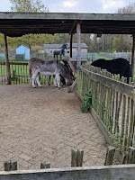
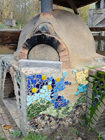
De streek is geliefd bij ruiters en speciaal voor hun zijn er op hoogte aanvraagknoppen aan de verkeerslichten.
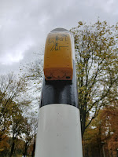
Zaterdagavond zijn we by night gaan eten in het Coast Beach House. Een beetje een avontuur om er te geraken, in het donker door de duinen en met een serieuze windkracht.
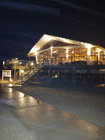
Zondag een stevigere wandeling voor Pacco en mij, we hadden 5 uur de tijd. Zolang duurde de workshop Capoeira.
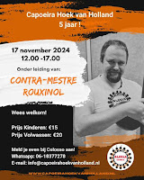
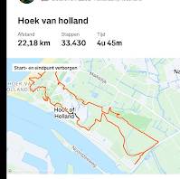
Verrassend veel natuurgebied en strand, zo dicht bij Den Haag. Al snel wordt het duidelijk dat de meeuw het symbool is van de Hoek van Holland.
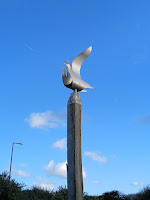
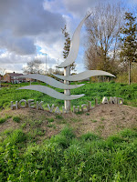